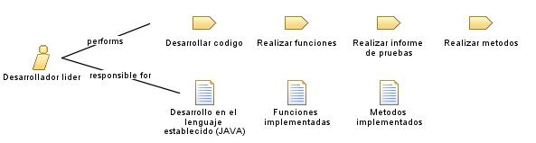

| Role: Desarrollador lider |
| |
 |
| El desarrollador líder es el encargado de guiar y coordinar el desarrollo del software en un proyecto. |
| Synonyms: Un sinónimo común para el rol de desarrollador líder en un proyecto de software es "arquitecto de software" o "líder
técnico". |
|
Relationships
 |
| Primary Performs |
|
| Modifies |
|
Main Description
| El desarrollador líder en un proyecto de software es un rol clave que se encarga de liderar y coordinar el equipo de
desarrollo en la implementación de las funcionalidades del software. Este rol implica tener un amplio conocimiento técnico,
experiencia en desarrollo de software y habilidades de liderazgo. El desarrollador líder trabaja en estrecha colaboración
con otros miembros del equipo, como los desarrolladores, los analistas y los diseñadores, para asegurar la calidad, el
cumplimiento de los requisitos y el cumplimiento de los plazos establecidos. |
Staffing
| Skills | Fuertes habilidades tecnicas, Experiencia en desarrollo, Liderazgo, Comunicacion, Resolucion de problemas |
| Assignment Approaches | Habilidades y experiencia, Liderazgo y comunicacion |
| Synonyms | Un sinónimo común para el rol de desarrollador líder en un proyecto de software es "arquitecto de software" o "líder
técnico". |
Key Considerations
| Conocimiento tecnico, Capacidad de liderazgo, Comunicacion efectiva, |
|